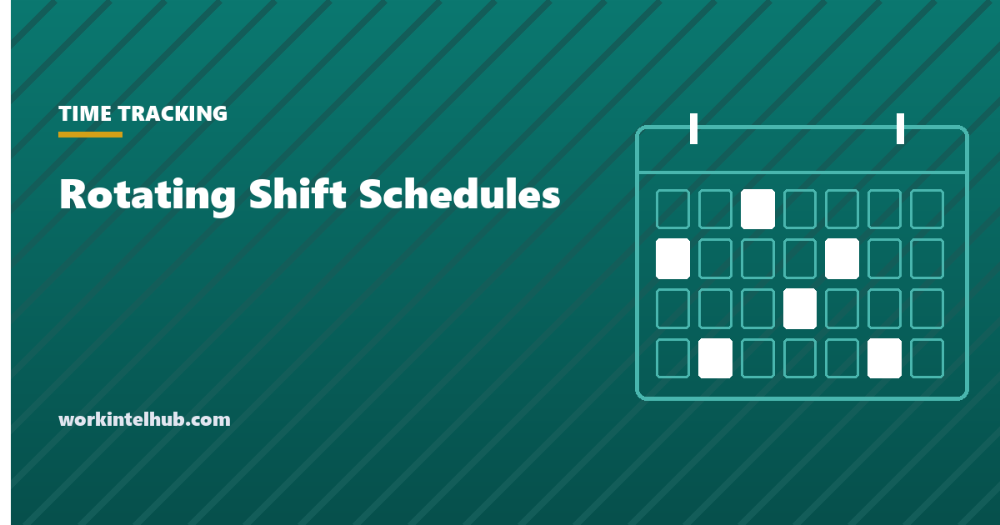

Rotating Shift Schedules

A rotating shift schedule covers a 24-hour operation with a fixed number of teams cycling through days on, days off and, usually, day and night shifts. Four patterns account for most 12-hour rotas in manufacturing, healthcare, emergency services and utilities: DuPont, Panama (also called 2-2-3), Pitman and 4-on-4-off.
The generator below builds any of them for four teams from a start date and counts the hours, the longest run of shifts and the overtime. The sections after it explain the trade-offs, which mostly come down to one question: do your people want a whole week off every month, or every other weekend?
Build the rota
Where the workweek starts changes which shifts fall in which week, and so the overtime
D is a day shift, N a night shift, a dash is off. Four teams are shown offset so that every day has one team on days and one on nights. Weekly hours are counted from the payroll workweek start you choose against the federal 40-hour threshold; a state daily rule would add more. Only complete workweeks in the period are counted.
The four patterns
| Pattern | Cycle | Sequence | Avg hours/week | Longest run | Distinctive feature |
|---|---|---|---|---|---|
| Panama (2-2-3) | 14 days | 2 on, 2 off, 3 on, 2 off, 2 on, 3 off | 42 | 3 | Every other weekend off; same shift throughout |
| Pitman | 28 days | Panama sequence, swapping days and nights every two weeks | 42 | 3 | Every other weekend off with rotation |
| DuPont | 28 days | 4 nights, 3 off, 3 days, 1 off, 3 nights, 3 off, 4 days, 7 off | 42 | 4 | Seven consecutive days off once a cycle; one 72-hour week |
| 4-on-4-off | 8 days | 4 on, 4 off | 42 | 4 | Simplest; days off drift through the week |
All four average 42 hours a week with 12-hour shifts, because each covers 168 hours with four teams. What differs is how the hours cluster. Panama and Pitman never exceed three shifts in a row and never exceed 48 in a week. DuPont concentrates work into one 72-hour week and pays for it with a full week off. 4-on-4-off is the easiest to run and the hardest to plan a life around, because the days off move forward through the week and only line up with a weekend every few cycles.
The overtime built into every 12-hour rota
Under 29 U.S.C. 207, overtime is hours over 40 in a workweek, and every one of these patterns produces weeks of 48 and weeks of 36. The 48-hour weeks carry eight hours of federal overtime regardless of the 36-hour weeks either side; averaging across the cycle is not permitted for private employers. The generator's overtime line counts this for Team A.
Three consequences. Budget the rota at roughly 42 straight-time hours plus the premium on the 48-hour weeks, not at 40. Choose the workweek start day deliberately: where the seven-day workweek begins changes which shifts fall in which week and can move overtime from one week to another without changing the pattern. And in states with daily overtime, every 12-hour shift carries four hours at a premium on top, which is why California employers on 12-hour rotas generally adopt an alternative workweek schedule by employee vote under Labor Code 511 to avoid it. Our time and a half calculator models the federal and California rules, and the shift differential entry covers the night premium most of these rotas also pay.
Choosing between them
- Pick Panama when predictability matters most: same shift, same alternating weekends, never more than three in a row. It is the easiest to cover absence on because the off-team is always known.
- Pick Pitman when nights have to be shared fairly and nobody will accept a permanent night team. The cost is the day-to-night switch every two weeks, which is the pattern sleep research is least kind to.
- Pick DuPont when the seven-day break is the retention hook, and the workforce is young enough to absorb the 72-hour week. Older workforces and safety-critical roles tend to move away from it.
- Pick 4-on-4-off for simplicity and long recovery blocks, and accept that the calendar never settles. It suits people without school-age children better than those with.
Whichever pattern, the decision that matters more is fixed versus rotating nights. Fixed nights are better for sleep and worse for fairness; rotating is the reverse. Ask the teams before deciding, because a rota imposed on a workforce that wanted the other one is the most common reason a 12-hour schedule fails within a year.
Rules that constrain the rota
- Rest between shifts. Federal law sets no minimum, but several states, and most union agreements, require eight to eleven hours. The day-to-night switch in Pitman and DuPont needs checking against whatever applies.
- Meal and rest breaks. A 12-hour shift in California carries two meal periods (the second waivable) and three rest breaks. %s covers the federal position, which is that rest breaks are paid and meal periods can be unpaid only if fully relieved.
- Predictive scheduling. Oregon and about ten cities require two weeks' notice of schedules and premium pay for changes in retail, food service and hospitality. A fixed rota published a cycle ahead satisfies the notice rule by construction.
- Recording it. A rota is a plan; the time record is what was worked. The time card calculator and attendance tracking guide cover the record side.
Key takeaways
- Four patterns cover most 12-hour rotas: Panama (2-2-3), Pitman, DuPont and 4-on-4-off. All average 42 hours a week with four teams.
- Panama and Pitman cap runs at three shifts and give every other weekend off. DuPont trades a 72-hour week for seven days off. 4-on-4-off is simplest and drifts through the calendar.
- Every 12-hour rota has 48-hour weeks, and each carries eight hours of federal overtime. Averaging across the cycle is not allowed.
- In daily-overtime states, 12-hour shifts need an alternative workweek arrangement or every shift carries four premium hours.
- Fixed versus rotating nights matters more than the pattern. Ask the teams before deciding.
- Check rest-between-shifts rules, meal and rest breaks, and predictive scheduling notice where they apply.
Frequently asked questions
What is a 2-2-3 schedule?
A 14-day pattern of two shifts on, two off, three on, two off, two on, three off, run by four teams on 12-hour shifts. It is also called the Panama schedule. Each team works seven shifts a fortnight, averaging 42 hours a week, and gets every other weekend off.
What is the DuPont schedule?
A 28-day rotation for four teams: four nights, three off, three days, one off, three nights, three off, four days, then seven days off. It averages 42 hours a week and gives a full week off every cycle, at the cost of one week containing six 12-hour shifts.
What is the difference between Pitman and Panama?
They share the 2-2-3 sequence. Panama keeps each team on the same shift, days or nights. Pitman swaps a team between days and nights every two weeks, so the full cycle is 28 days and night work is shared equally.
How many hours a week is a 4-on-4-off schedule?
Forty-two on average with 12-hour shifts: four shifts in every eight days is 48 hours per eight days. Individual Monday-to-Sunday weeks alternate between 48 and 36 hours, and the 48-hour weeks carry eight hours of federal overtime.
Do 12-hour shifts mean overtime every week?
Not every week, but every rota has weeks over 40 hours and those hours are overtime under federal law. Averaging across a two- or four-week cycle is not permitted for private employers. States with daily overtime add a premium to every 12-hour shift unless an alternative workweek arrangement is in place.
How many teams does a 24/7 rotating schedule need?
Four, for 12-hour shifts. Two teams cover each 24-hour day and two are off, which is what produces the 42-hour average. Eight-hour rotas need at least four teams as well, and usually five to keep hours near 40.